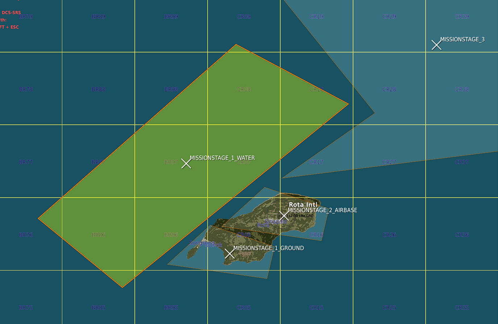

Tutorials
This guide is to get you started building your first Spearhead mission.
Spearhead was created to enable the mission maker to worry as little about the running, timing and scripting
and most about the setting and looks and feel of the mission.
In the example we'll show how you can create a simple island hopping mission
Include the Script
Download the latest version of Spearhead. You can choose which version you feel comfortable with.
Versions that end in -rc are not stable. Versions that do not have the "release candidate" (rc) tag are.
See All releases here
Then run the script in the mission.
Please do exactly as it's done below.

Spearhead does not require any dependencies (eg. MIST or MOOSE). Compatibility with other frameworks is not tested at this time, so cannot be guaranteed, but there should be no conflicts if they are not controlling the same units.
Stages
So first of all think about the stages.
These are logically ordered zones that will activate one by one based on the mission status in them.
There is a little more to it, but you'll find out.
Stages need to be named according to the convention: MISSIONSTAGE_[OrderNumber]_[FreeForm]
The first stage will be called MISSIONSTAGE_1 or MISSIONSTAGE_1_EAST for example.
Stages are divided in primary stages: MISSIONSTAGE_[number]
or secondary stages: MISSIONSTAGE_x[number]
Note the x before the number. This marks it as "extra"
For this mission we started with the three stages: MISSIONSTAGE_1_GROUND, MISSIONSTAGE_2_WATER and MISSIONSTAGE_1_AIRBASE as you see in the image.

MISSIONSTAGE_1_GROUND will be activated when the mission starts
MISSIONSTAGE_1_WATER will be also be activated
MISSIONSTAGE_2_AIRBASE will be activated when the player enters the zone.
Setting up CAP
If you don't want to use the CAP managers withing Spearhead you can skip this and continue to Setting up Missions.
However CAP is one of the painpoints in a lot of missions and setting up a dynamic feeling airspace can be
quite the challenge.
With the CAP managers we've tried to make this a lot easier.
A CAP group needs to follow the following naming convention: CAP_[A|B][CONFIG]_[Free Form]
For details on config read this: CAP Group Config
For now I set up 3 groups with the following names. CAP_A[1]1_Rota1, CAP_A[1]1_Rota1-1,
CAP_B[1]1_Rota1
The first two are marked with A and will therefore be primary CAP units. They will be
scheduled and make up for the total count.
Meaning that for this airbase there is 2 CAP units max at a time flying out.
In this case all groups have [1]1 in the name, (This would be the same as [1]A) which means
that when stage 1 is active the groups will activate and fly out to stage 1.
I also set up a few groups further back. One example: CAP_A[1-3]3_Group1. This group will
protect zone 3 when zones 1 through 3 are active.
CAP units fly out, fly their CAP zone for x amount of minutes and will then RTB.
Before they actually RTB an event is triggered 10 minutes before the actual RTB task. This event
will trigger a backup unit to startup and fly out to take over.
TIP !
You can start a mission, speed up the simulation and make the CAP fly out to see what happens
Creating CAP Routes
Creating CAP routes is not needed per se, but with a multi-stage stage (we have 2 stages with _1_) it is recommended.
Similarly with huge stages.
If there is multiple zones it will "round-robin" over them.
If no CAP route is present the unit will fly a route generated differently per zone:
quad zone => race-track between the corner closest to the origin airbase to the center point of the zone
circle zone => race-track between the closest point on circle to the origin airbase to the center
If you want to create your own CAP Routes you can!
For this example I created 2 CAP routes inside of the 2 _1_ stages.
As you can see below there's a nice feature you can exploit. As long as the X of the zone is inside of the the CAPROUTE will be used for that stage!

Well, nice, we're done setting up the initial CAP effort.
If you want to change values for the CAP routes please read about how to configure it here: Cap Config
Setting up Missions
Now the part where you as a mission maker can really get into the nitty gritty.
Missions are managed and monitored by Spearhead.
Statics, groups and single units all alike.
NOTE: While static are the same as groups in this context, they are not within DCS, please refrain from using static groups. A static in DCS has a 1:1 relation for group:unit.
For this example I'll set up two missions. The first one is DEAD mission and will consist of an SA-2 site with an additional "control center".
Mission: DEAD
As you can see on the left image the template of the SA-2 was placed. Then dragged around to only face south.
An additional track radar and search radar was added and all launchers were surrounded by sandbags.
On top of this there was a sort of control center added with walls, vehicles and some tents.

Important to note. It's all inside the triggerzone MISSION_DEAD_BYRON. Which means it's a MISSION of type DEAD and with name BYRON.
At the start Spearhead will detect the triggerzone, take all units and despawn them and only spawn when needed for better performance.
The current list of mission types are:
DEAD
STRIKE
BAI
SAM
For specific differences, please check the reference page.
Each type has some additional completion logic to it.
DEAD and SAM missions will be marked complete when all air defences are destroyed. This includes Tracking Radars, Self tracking launchers and AAA guns if they are inside the zone.
If you want to add the Search radar or another random unit like the command tent to the target list you can add a TGT_ prefix to the unit or group you want destroyed.
Please be aware that adding TGT_ to a group will make the entire group a target and therefore each unit needs to be destroyed.
Mission: STRIKE
To show the power of TGT_ targets I'll create a strike mission next.
A nice supply strike mission will do. Add a ship, some containers and some additional units.
Even some SHORADS to spice the whole thing up.
In the picture below all units that are selected and who show up as white (they are actually red) have the prefix TGT_ in front of their name.
This will make it so the mission will be marked as complete when those units are destroyed. The rest of the units will exist until the entire stage is cleaned up.
Mision: CAS
A CAS mission will add an additional layer to the mission.
Whereas BAI, Strike and DEAD missions are somewhat clean, CAS missions are where the chaos starts.
With CAS missions an additional BattleManager will be activated.
This BattleManager will scan for units and force them to fire at other units in the zone.
Great efforts are made to make AI miss. In the end we want players to be they key factor to mission success.
If AI do seem to be hitting more than 1 or 2 unfortunate targets, it is most likely you either have another script controlling the units, or you have placed the units too staggered.
Please make sure to also read the "Notes" section below the image.
Notes:
-
AAA units will sometimes also follow their lead and fire at targets on the ground.
They will however always prioritize AIR targets as at that point they have a threat themselves and won't follow their lead's targets.
If you really don't like this, it's best to put the AAA units in a separate group. -
Units will purposely aim past a target.
This simulates a fight, but doesn't actually do anything, so the player is the only person that can complete a mission.
Be aware that if you stagger groups too much, shooting past a target might hit another.
Best would be to always test it.
You can also enable debugging.
This will draw all boxes and lines.
NOTE: Keep DEBUG disabled on an actual mission. -
When you want AI to shoot through gaps a distance of approx 150ft is required between the two outer units.
These gaps will be automatically detected and can even exist within a group itself.
-
Line of sight is important, dependent on which type of unit.
Units won't shoot when they can't fire at a certain point.
As a mission editor it's up to you to set the range, line of sight and cover.
-
As Performance is something that's on any multiplayer mission maker's mind, this is a very optimised way.
AI does not have to know, scan, priorise targets every second.
It does not really have to think or move.
Ofcourse, there is a balance and too many can be too much.
For now it has been tested with 60+ units in 3 seperate CAS zones active at a time.
No performance degradation was seen at all.
Mission Briefings
So now we've created some missions we also want to add briefings to them. This is pretty easy with Spearhead.
To do so click on draw on the left hand pane in the mission editor. This opens up the drawing tools in the editor.
On the right click TextBox and click somewhere inside the zone to which you want to add the briefing.
Give the briefing a name (It's not used, but can be nice to use to reference the briefing later) and add the briefing.
The text box is quite small, but can have a lot of text. Easiest is to edit the text in an editor of choice and paste it into the box afterwards.
Keep the binding layer to "Author" only. That way it doesn't show up for anyone other than in the mission editor.
See the two images below. The left shows the Text Box drawing. The right shows the briefing as shown in the mission.


TIP: You can make both the Color and Fill have a 0 value for a. This will make the weird box be invisible. Make sure to add the name of the mission to the text box name to easily find it back.
We are now done creating a first mission. Hit fly and test it.
Check all references for way more features and keep up to date with the latest changes as they come along!